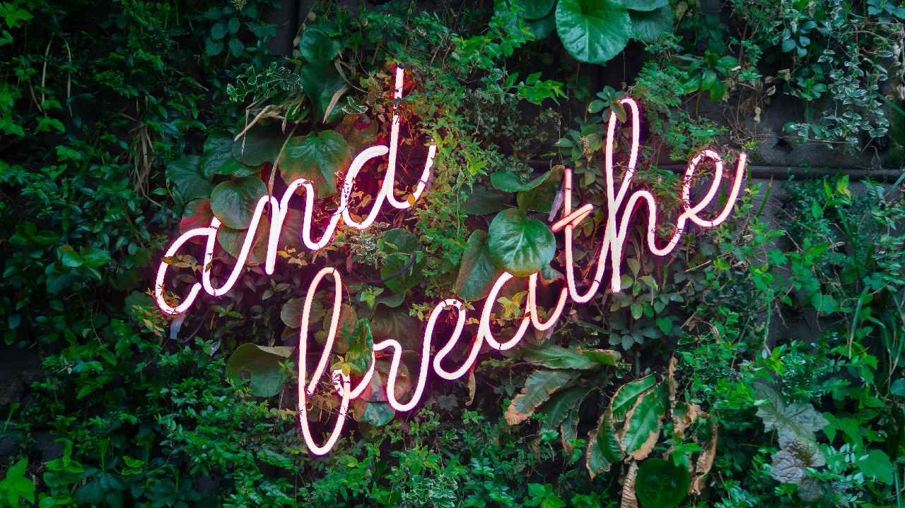

Things that helped...
 Chantal
Chantal
29 July 2021
When Mum was first diagnosed with cancer I had never had anyone so very close to me diagnosed with cancer. My Grandma on my Dad’s side had suffered with it and passed before I was born and my Grandma and my Grandpa on my Mum’s side had both had it but they had lived in India when they were going through it. So I had never experienced it so close up before. I wanted to learn everything so that Mum could have the best support and so I went onto the Macmillan Cancer support website which had so many sections on information on all kinds of cancers, the stages, foods that were helpful for people going through Chemo and even recipes. All presented in such an easily accessible website.
Don’t say if you need anything let me know… as people won’t let you know. Some ideas of things you could do to help someone in need of support while dealing with cancer are..
- Flowers Flowers are lovely, but when you get 7 bouquets in the post and you’ve ran out of vases already this is really stressful for those not wanting to waste this thoughtful gift. If you do want to send flowers, ones that are in their own vase are so very helpful. Although Mum and Dad’s house was looking like a funeral home with the bouquets everywhere so other ideas of thoughtful things are…
- Food So helpful to make meals and drop them off as even if you’re not a good cook (maybe this is just because of the Indian in me that we appreciate food so much) the blessing of not have to even think about what to make that day after spending hours at the hospital or having no energy to shop let alone cook is incredible. If you can make things that are low on sugar and use meat and eggs that are antibiotic and hormone free these are the best. Or sending an organic fruit and veg basket, these things are just so massively helpful.
- Rides When you have cancer you have to go to the hospital - a lot. Often the chemo or radiotherapy can leave you feeling weak and being offered lifts to and from the hospital is such a gift. Sitting with the person while they have their chemo (outside of COVID-19 times) is next level!
- Care Packages I got a great tip from a friend whose Mum had had cancer the previous year. She said that every Chemo session she would plan a little surprise for her Mum. Examples would be, videos from friends and family saying what they love about your person or some special hand cream or a tasty treat. Just so every time they knew they were going for chemo - which is obvs horrible, they knew they would have something to look forward to too. For Mum’s first session I made her a Chemo survival care package with things in like, straws (because some chemos can cause sores in your mouth), Build Up milkshakes, Aqueous cream (because the chemo and radio can dry out your skin and it’s good to have non perfumed products), ginger sweets (to help with nausea), eyebrow pencil and some of her favourite dark chocolate (cutting down on sugar is good).
- A fun dressing gown When you have to sleep a lot because chemo can be exhausting it can feel like you’re in a dressing gown all day. To have one that is fun/cosy/different to your usual one makes a big difference.
- A juicing machine One of mum’s friends bought her one and it was so good, (she also got her a dressing gown), she could get lots of nutrients in without having to worry about chewing as so many times she would be eating and saying that everything tasted like chewing on wood as her tastebuds were affected.
- A soft cosy blanket Always comforting to have something soft to wrap around you.
- A pair of soft cosy socks Your feet can get extra cold so having some extra pairs of fluffy socks is lovely.
- Email updates Have someone do a round robin update - when a loved one is going through cancer you really want to know what’s happening and how they are feeling or how the last treatment went. One day I called my Dad on the iPad on FaceTime as the home phone was constantly engaged, his mobile was ringing while he was on the home phone and Mum was laying in bed next to him looking so exhausted. After that I decided to do ‘Email updates’ to all Mum and Dad’s family and friends so that Dad didn’t have to keep retelling the same happenings and relive what had gone on over and over. It also stopped the phone from ringing and waking mum up when she was asleep and trying to recover. I would then forward the emails to Mum and Dad so they could read them in their own time and see the wishes people were sending.
- Gilda’s Clubhouse I was sat crying in our new apartment after just moving to Chicago, a wave of grief had just come and at the time I wasn’t allowed to work so had a lot of free time on my hands. I then felt led to search for Grief groups so I typed it in to Google and Gilda’s clubhouse popped up! I couldn’t believe just 10 minutes walk from my home was a charity that provided support for those going through cancer and their relatives and friends. It also helps those who have lost someone to Cancer. It was such a wonderful place, I couldn’t believe that it was FREE, with over 100 of free activities each week for you to take part in from Yoga, to cookery lessons, to improv class to support groups in a nonresidential, homelike setting. It is named after Gilda Radner, who was one of the original cast members of “Saturday Night Live.” Laughter and love were central themes of Gilda’s career and life, including in her marriage to actor and comedian Gene Wilder, the original Willy Wonka. For more info go to gildasclubchicago.org they have Clubhouses across the US.
- Look Good Feel Better This was recommended to Mum through the hospital and it was SO good. Being a woman and losing things that make you feel feminine like your hair or breasts is really so hard. But this fabulous charity provides workshops and goodie bags with products donated from high end cosmetics brands to help give those suffering from the effects of cancer some confidence back. I can’t recommend them enough! lookgoodfeelbetter.org
- Bras There are loads of places that do bras that are for post surgery with pockets for a prosthesis but they can be more pricey. Mum and I discovered that ASDA did a great soft, non wired sports bra which was so comfortable in skin colour, white and black. When the cancer came back and turned to skin cancer all over her back and chest these worked really well until the cancer turned into weeping sores. I looked them up to recommend them and now ASDA actually does post surgery bras at a great price - plus there is not VAT if you’re buying one for post surgery for having breast cancer. Really so good. Find here.
- Opi nail varnish Mum’s oncologist recommended Mum to get a manicure and a pedicure, she was a bit like “Is this really necessary to help me?’ But then afterwards found that having a lovely colour on her nails boosted her mentally as it covered up her nails that had gone black from the chemo. It goes back to the whole ‘Look good, feel better’. Some charities have volunteers who go to see people with cancer and to do manis and pedis for free. Mum met a really good friend through this and she became a wonderful support to me too. Opi and Sally Hansen are seen as less toxic than other nail varnishes and safer to use for people with cancer.
- Talk to people Whether you are suffering with cancer or it is a loved one who is, it’s hard on both parties. Sometimes the surrounding family and friends can be affected deeply by watching their loved one in pain and not being able to relieve it or take it away. Try and make sure you have people you can talk about where you’re at to, whether it be a support group, a counsellor or a good friend, being able to share your pain with someone makes you feel less alone and lighter too.
- Help please: Can anyone help with some nice fashion for ladies with Lymphedema in their arms? This was really tricky for my Mum, we would have a lot of shopping trips that ended sadly with nothing because she would have to go up so many sizes to get a top to fit her left arm that was swollen with the Lymphedema but then it wouldn’t fit the rest of her body. I think this is a gap in the market if anyone is a fashion designer and wants to take this much needed project on!
- Prayer Last but by no means least…Whoever is reading this may or may not have faith but for our family God has been the source of our strength and comfort without a doubt. Knowing that so many people were praying for Mum and us carried us through so many devastatingly hard times. As cheesy as it sounds we could honestly ‘feel the love’ as people prayed for us from afar and felt carried.